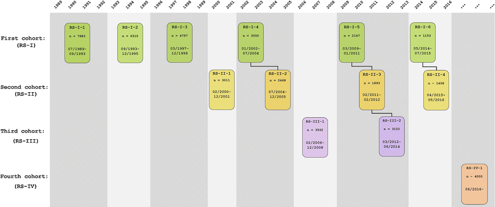

Chapter 2 Introduction
We will use the tidyverse language and ecosystem. The intentation is that all students becoming familiar with the data, develop the essencial skills for a reproducible data cleaning, since this is the first step before doing any data analysis.
We followed the structure of the visit process to name the cohorts and visits:

In the following structure:
| var1 | var2 | var3 | var4 | var5 | var6 |
|---|---|---|---|---|---|
| RS-I-1 | RS-I-2 | RS-I-3 | RS-I-4 | RS-I-5 | RS-I-6 |
| NA | NA | RS-II-1 (ep) | RS-II-2 | RS-III-3 | RS-III-4 |
| NA | NA | NA | RS-III-1 (ej) | RS-III-2 | RS-III-3 |
Each small chapter will provide the code to clean each of the variables that are oftenly used as covariates in any data analysis.
Since the name of the variables could have changed in each visit, and data is arranged in different ways, we decided to create a systematic flow of how the cleaning process is one covariate at a time, for all visits, for all cohorts.
The usuals steps will include:
- Import datasets for all the visits, for all cohorts.
Note that we use the
herepackage to specify the folder/subfolder and file we want to import. We do this to avoid specifying the directory. This practice helps the reproducibility of the code as mentioned in the following link- We will always include the subfix representing the cohort and visit. For example:
rs1_1 <- read_sav(here::here("00_raw_data", "visits", "Ergo1ResponseDetail_(22-jan-2015)_excerpt.sav"))
rs1_2 <- read_sav(here::here("00_raw_data", "visits", "Ergo2ResponseDetail_(22-jan-2015)_excerpt.sav"))
rs1_3 <- read_sav(here::here("00_raw_data", "visits", "e3_(3)_RESPONS_(22-feb-2016)_excerpt.sav"))
rs1_4 <- read_sav(here::here("00_raw_data", "visits", "e4_(4)_RESPONS_(12-mar-2018)_excerpt.sav"))
rs1_5 <- read_sav(here::here("00_raw_data", "visits", "e5_(5)_RESPONS_(22-jun-2016)_excerpt.sav"))
rs1_6 <- read_sav(here::here("00_raw_data", "visits", "e6_(6)_RESPONS_(10-feb-2017)_EXCERPT.sav"))
rs2_1 <- read_sav(here::here("00_raw_data", "visits", "ep_(1)_RESPONS_(15-jan-2019)_excerpt.sav"))
rs3_1 <- read_sav(here::here("00_raw_data", "visits", "ej_(1)_RESPONS_(04-apr-2016)_excerpt.sav"))- We will split the datasets that have data for more than one cohort, and name them by their respective cohort - visit. For example:
# Separate rs1_4 into rs1, rs2
rs1_4 <- rs1_4 %>%
filter(rs_cohort == 1)
rs2_2 <- rs1_4 %>%
filter(rs_cohort == 2)- Merge the data for all visits, by cohort:
rs1 <- list(rs1_1, rs1_2, rs1_3, rs1_4, rs1_5, rs1_6)
rs1_vis <- reduce(rs1, left_join, by = c("ergoid", "rs_cohort"))- Select the specific variables from the combined dataset, by cohort and rename for easier comprehension, by cohort:
rs1_bmi <- rs1_bmi%>%
select(ergoid, rs_cohort, e1_aahgt, e1_aawgt, e2_229, e2_230, e3_229, e3_230, e4_229, e4_230, e5_229, e5_230,e6_229,e6_230) %>%
rename(hgt1 = e1_aahgt, hgt2 = e2_229, hgt3 = e3_229, hgt4 = e4_229, hgt5 = e5_229, hgt6 = e6_229,
wgt1 = e1_aawgt, wgt2 = e2_230, wgt3 = e3_230, wgt4 = e4_230, wgt5 = e5_230, wgt6 = e6_230)- Bind, if necessary, the cohorts. Since the variable names are consistent through the datasets.
rs_bmi <- rs1_bmi %>%
bind_rows(rs2_bmi) %>%
bind_rows(rs3_bmi)- Create new variables (Example)
rs_bmi <- rs_bmi %>%
mutate(bmi1 = wgt1/((hgt1/100)^2),
bmi2 = wgt2/((hgt2/100)^2),
bmi3 = wgt3/((hgt3/100)^2),
bmi4 = wgt4/((hgt4/100)^2),
bmi5 = wgt5/((hgt5/100)^2),
bmi6 = wgt6/((hgt6/100)^2))
#Note that we could have created a function, but the intention of this code is to make adaptable.- Export the variable to a
clean_datafolder.
export(bmi, here::here("02_clean_data", "bmi.Rdata"))
- Merge variables by
ergoidfor a complete folder